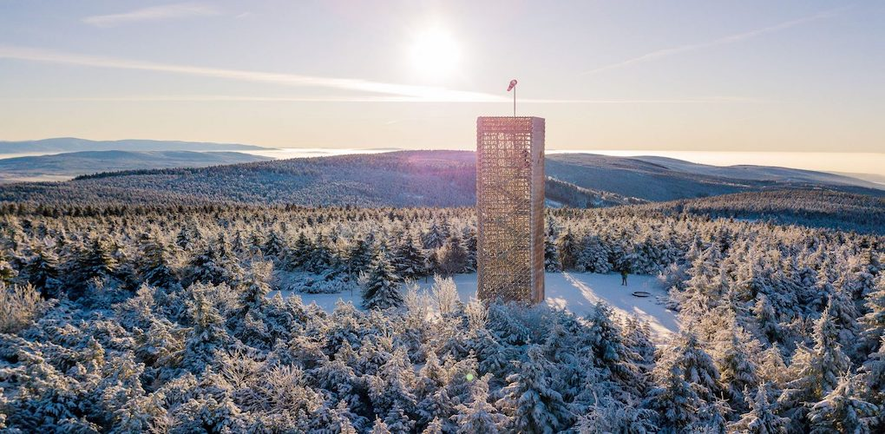
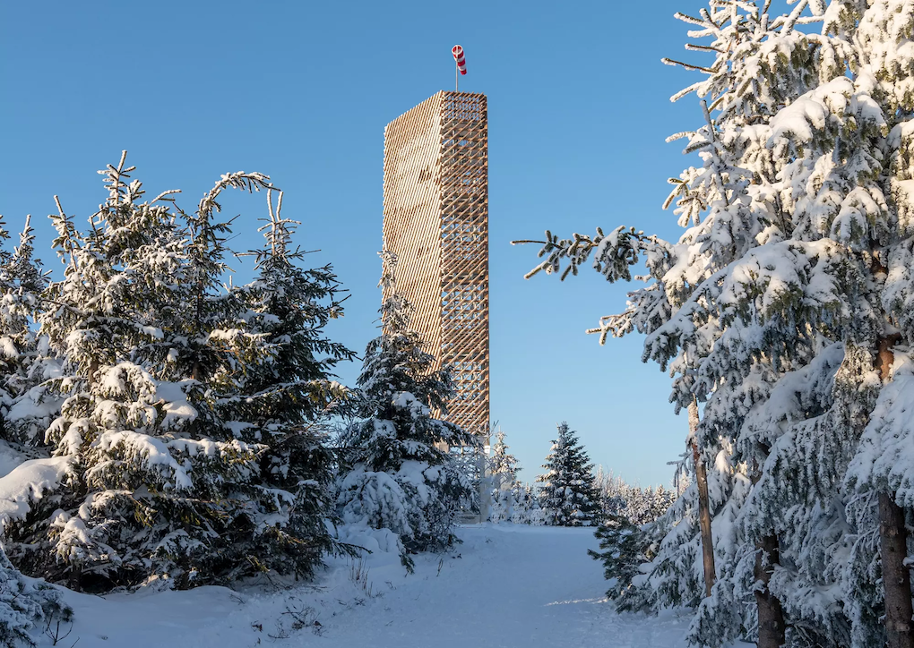

Velká Deštná
Na vrcholu Velké Deštné stávala dřevěná rozhledna ve tvaru pyramidy, která roku 2003 prošla rekonstrukcí a v roce 2010 byla ze dne na den stržena a rozřezána. V sobotu 26. 10. 2019 byla na vrcholu hory otevřena rozhledna Velká Deštná vysoká 19 metrů ocelové konstrukce obložené dřevem. Návštěvníkům poskytuje dechberoucí výhled na Rychnovsko, polské Stolové a Bystřické hory, Králický Sněžník, Krkonoše a Ještěd. Pod vrcholem při Jiráskově horské cestě naleznete skromnou boudu horské služby. Uvnitř se ukrývá malý bufet, kde se lze o víkendech posilnit čajem, kávou, svařákem, sušenkami a dalšími pochutinami. Přístřešek samotný je otevřený po celý rok a dá se zde kdykoliv schovat před nepřízní počasí. Přibližně půl kilometru pod vrcholem u zelené turistické značky, která vede do Luisina Údolí, je malá studánka s výbornou vodou a nádherným výhledem do kraje. Rozhledna na Velké Deštné v Orlických horách je podle ankety Klubu přátel rozhleden Nejkrásnější rozhlednou roku 2019.
Na Velkou Deštnou se můžete vydat jak pěšky, tak na kole. Hora s rozhlednou je přístupná z autobusových zastávek Deštná, Šerlich a Masarykova chata. Nejpohodlněji a s nejmenším převýšením Velkou Deštnou zdoláte po červené Jiráskově horské cestě ze Šerlichu. Poctivé stoupání se vším všudy vede na nejvyšší vrchol Orlických hor z Bedřichovky, nebo ze Zákoutí v Deštném s malým odpočinkem v Luisině Údolí.
